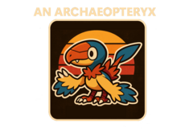

Stargrace reacts to the new pet capture mechanics in WoW's Midnight, worried Blizzard is phasing out pet battles.

The Chronicler is excited to revisit Illusions of Glory now that GMT has smoothed out its past issues.


Anarchae's journey through Fantasy Life i involves plenty of crafting, shrine completion, and legendary hunting.